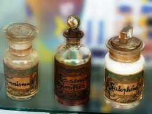
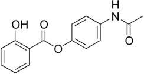

Mi sa che per trovare il Salofene in bottiglia oggi bisogna andare a Istanbul, o giù di lì.
Infatti è lì che l'ho trovato qualche giorno fa.
Naturalmente non sono andato nella vecchia Costantinopoli per cercare cose di questo tipo, ma solo per onorare come posso (purtroppo in maniera sempre più scalcinata) il mio primo e fondamentale hobby, che sarebbe (ho detto "sarebbe"...) quello di viaggiare in lungo e in largo per il mondo seguendo solo i suggerimenti estemporanei della fantasia.
Siccome per me il vedere posti nuovi è una necessità quasi vitale, come minimo "semel in anno" mi devo muovere, naturalmente sacrificando qualcos'altro.
Per farla breve, son tornato dopo tantissimi anni nel paese di Ataturk per verificare se la sempre suggestiva vecchia capitale è ancora come la ricordavo.
(No, non lo è proprio! Ma niente paura, non voglio stravolgere il blog cominciando a parlare di queste mie esperienze socio-geografiche. Solo una nota: fin che son stato via lei si è fatta i suoi bei quindici milioni di abitanti...).
In ogni caso, facendo il turista mi sono imbattuto nella vetrina di una farmacia e ...fermi tutti!
-Forse Paoloalbert ha visto qualcosa di chimico- dicono i miei accompagnatori.
Vero! Almeno adesso ho una immagine diversa dalle solite da portar a casa; la aggiungerò alle moschee, alla folla, a tutto ciò che si può vedere, immaginare o fotografare in una città affascinante come Istanbul.
Ecco il mio bottino fotografico: a sinistra c'è una bottiglia di Tannibismuth, al centro una di Essence de Girofles (chiodi di garofano) e a destra quella di Salophene.
Ancora più a destra un'altra della quale dirò poi.

Vecchi residui dei primi del novecento, messi in vetrina giusto per attirare l'attenzione di qualcuno come me.
Il Tannibismuth era tannato di bismuto; ho letto che con una trentina di cg si curavano i problemi intestinali dei bambini... bah, piuttosto dell'antimonio, meglio il bismuto!
L'essenza di chiodi di garofano (eugenolo e derivati) era un buon disinfettante per la bocca, utile per il mal di denti. Di questo rimedio mi fiderei di più.
Il salofene (4-acetamidofenil-2-idrossibenzoato)

è più interessante: è un famoso medicinale della Bayer commercializzato a cavallo tra l'ottocento e il novecento, con azione antireumatica, antipiretica e antinevralgica. Infatti la molecola contiene sia l'acido salicilico che il paracetamolo, i quali si formano nell'intestino dopo l'assunzione.
Era assai meno irritante dell'acido salicilico e molto meno tossico dell'allora diffuso salolo (salicilato di fenile).
Vicino a queste bottigliette ce n'era un'altra, vuota ma con l'etichetta ancora più interessante: aveva contenuto il famoso Kermes minerale, un composto ottenuto da carbonato di potassio e ossido/solfuro di antimonio dal bel colore rosso.
Il Kermes è stato ritenuto per un paio di secoli una vera panacea, dato che veniva impiegato come antiinfiammatorio, diaforetico, contro la febbre ostinata, contro l'epilessia, come emetico...
Essendo a base di antimonio, per quest'ultimo uso credo che fosse veramente efficiente: o tutto su, o tutto giù, paziente compreso!
Sono sicuro che quando sono stato la prima volta a Istanbul, cercandoli avrei trovato in farmacia sia il salofene che il kermes, e me li avrebbero pesati con una bella bilancina in ottone.
Adesso pazienza; nell'era dei blisters anche da quelle parti, accontentiamoci di vedere questi storici rimedi solo in fotografia.